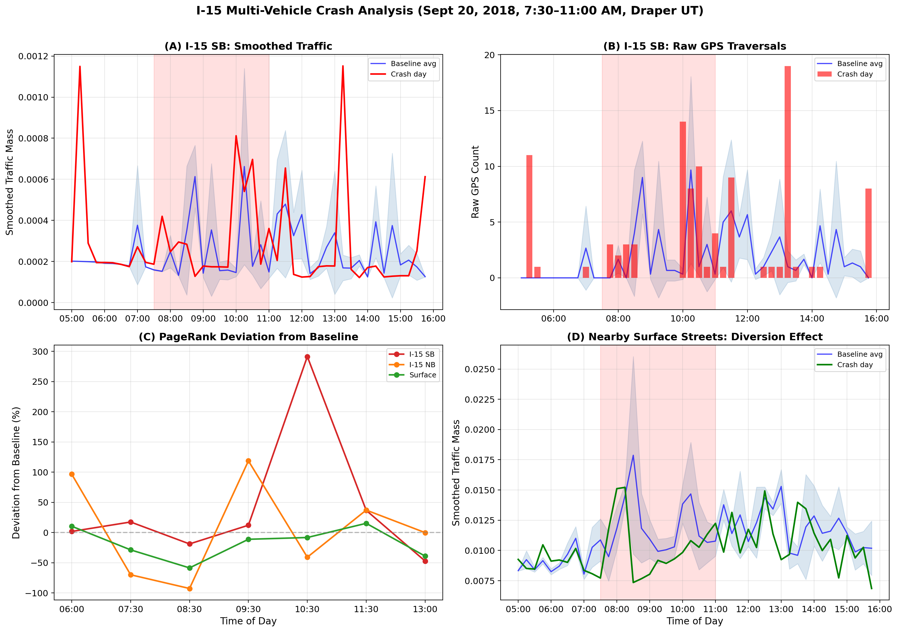
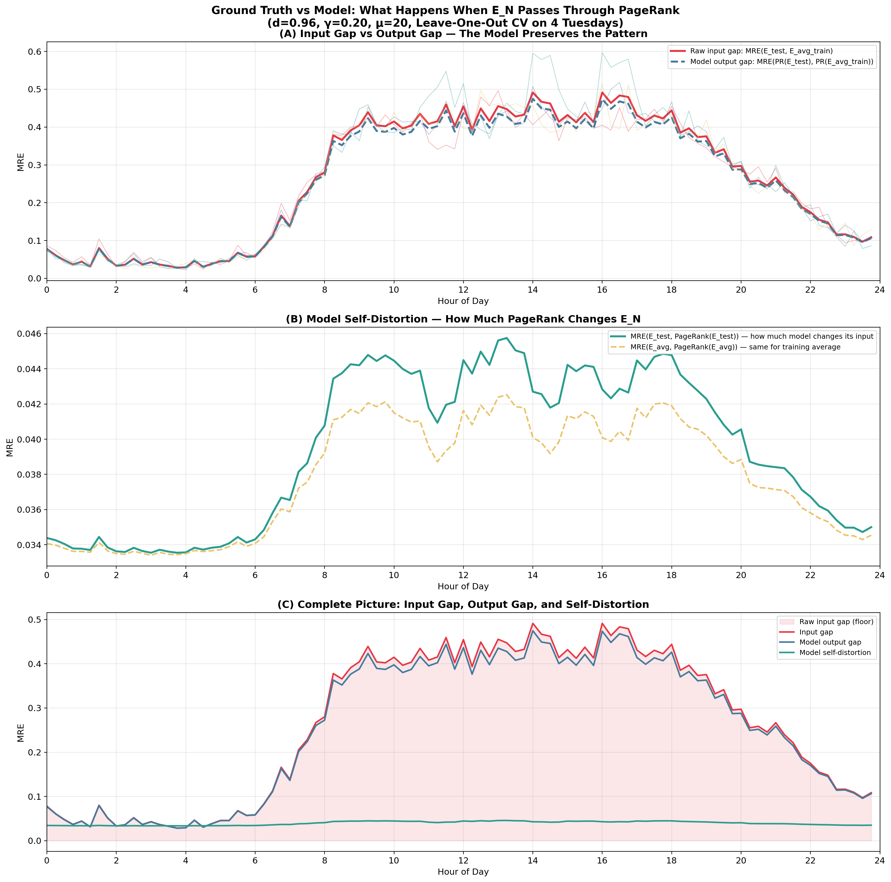

Summary for discussion — April 2026
We have 467,911 GPS trajectories on Salt Lake City's road network (99,716 links) over 30 days. But in any 15-minute window, only 2-3% of links have GPS observations. We want to estimate a complete traffic distribution across all links.

97% of links are unobserved in any given window.
Three steps:
Step 1: Smoothing. Graph diffusion spreads observed counts to neighbours. This fills the 97% gaps using road adjacency. At γ=0.26, we retain 67% of variance while achieving 100% coverage. The smoothing is a spectral low-pass filter — it preserves the overall traffic pattern (DC component) while attenuating sampling noise.
Step 2: Two-Phase PageRank. A random walk on the network with travel-time self-loops: each link retains mass proportional to μ·length/speed. This makes highways hold more mass than short connectors — matching real traffic physics.
Step 3: Demand weighting. We multiply transition weights by demand[j]γ, where demand is the average popularity from training data. This lets us push the damping factor to 0.96 (only 4% ground truth needed).
| Metric | Value | Meaning |
|---|---|---|
| Top-100 MRE | 0.031 | 3.1% average error on the 100 busiest roads |
| Overall MRE | 0.046 | 4.6% average error across all 99,716 links |
| Pearson r | 0.997 | Near-perfect linear correlation with ground truth |
| Rank overlap | 94/100 | 94 of the true top-100 links correctly identified |
Evaluated on 49 random held-out timeframes (seed=42).

Parameter sensitivity: the optimal region (μ=20, β=0.9) is broad and stable.
Problem: At d=0.80, the model uses 20% ground truth. We wanted d>0.90 (less ground truth dependence), but MRE doubles.
Solution: Add one parameter γ that weights transitions by average link popularity: P(i→j) ∝ wij · demand[j]γ
Result: At d=0.96, γ=0.20: Overall MRE = 0.038 — better than the original at d=0.80, using only 4% ground truth.

(A) Without demand weighting, MRE rises with d. (B) With γ, MRE stays below 0.05 even at d=0.96. (C) Direct comparison.
Validated across 3 independent train/test splits:
| Config | Temporal | Day-of-Week | 5-Fold CV | Average |
|---|---|---|---|---|
| d=0.80, γ=0 (original) | 0.048 | 0.046 | 0.046 | 0.047 |
| d=0.94, γ=0.15 | 0.044 | 0.042 | 0.043 | 0.043 |
| d=0.96, γ=0.20 | 0.040 | 0.038 | 0.038 | 0.039 |
September 20, 2018: a 4-vehicle crash blocked I-15 SB for 3.5 hours (7:30-11:00 AM). We compared crash-day PageRank mass against 3 baseline Thursdays.

(A) Smoothed SB traffic. (B) Raw GPS counts (sparse!). (C) PageRank deviation: -18.9% at peak, +291% rebound. (D) Surface streets.
| Time | Phase | I-15 SB | I-15 NB |
|---|---|---|---|
| 06:00 | Pre-crash | +1.7% | +96.5% |
| 08:30 | Peak crash | -18.9% | -92.7% |
| 10:30 | Rebound | +291.4% | -40.9% |
| 11:30 | Recovery | +36.7% | +37.1% |
The demand-weighted model (d=0.96) gives identical deviations — crash detection works with only 4% ground truth.
September 15: Utah vs #10 Washington at Rice-Eccles Stadium (47,445 attendance). Documented road closures: 500 South (lane reduction) and Guardsman Way (full closure).

(A) Traffic surge at 19:00. (B) Deviation pattern. (C) μ-control prediction. (D) Optimal μ over time.
The model captures: road closures (-85.9% on 500 South), arrival surge (+463%), and post-game departure (+248%).
μ (dwell-time scale) controls how much mass a link retains per iteration. At μ=20 (default), self-loop probability is 99.5%. This is why modifying speed, lanes, or even removing links from the adjacency had no effect (<1%). Those changes affect the 0.5% outgoing flow. Only μ affects the 99.5% retained mass.
| Intervention on crash links | Max effect on SB mass |
|---|---|
| Speed = 0.1 m/s | -0.44% |
| Lanes = 1 | -0.54% |
| Remove from adjacency entirely | +0.67% |
| μ = 0.01 | -64.4% |
Using Sept 13 (normal Thursday) as input, reducing μ on the 21 SB crash links:
| Time | Error at μ=20 | Best μ | Error | Improvement |
|---|---|---|---|---|
| 08:00 | 34.1% | 0.10 | 0.0% | +100% |
| 08:30 | 179.1% | 0.01 | 11.5% | +93.6% |
| 08:45 | 380.7% | 0.00 | 26.4% | +93.1% |
Same approach on the football game: 94-98% error reduction during closure phases.
Cross-validated across 4 Tuesdays (no events). The optimal μ stays between 10-20 at all 96 timeframes, with only 1% improvement over fixed μ=20.

(A) Ground truth gap and model error follow the same pattern (r=0.9999). (B) Model self-distortion is only 3.9%. (C) Complete picture: input gap dominates.
r = 0.9999 between raw data gap and model error. The model adds less than 4% distortion. When prediction error is high, it's because the data itself differs between weeks — not because the model is wrong.
| Parameter | What it does | Value |
|---|---|---|
| d (damping) | Balance between matrix (96%) and ground truth (4%) | 0.96 |
| γ (demand) | Encodes average traffic demand into the matrix | 0.20 |
| μ (dwell-time) | Per-link mass retention — the only knob for local disruption | 20 (normal), 0.01 (disrupted) |
Separation of concerns: γ handles global accuracy (enables high d). μ handles local disruption response (per-link control). Together: 4% ground truth, 3.1% Top-100 MRE, and 93-98% error reduction on crash/event prediction.
Salt Lake City road network: 99,716 links, 467,911 GPS trajectories, Aug 31 – Sep 30, 2018. GPU-accelerated (RTX 4070, CuPy). Full paper: paper/main.pdf (21 pages). Detailed reports: temp_crash_analysis/index.html (6 linked reports).